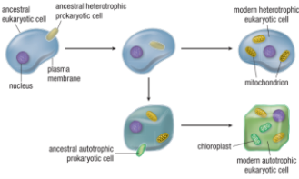
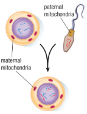
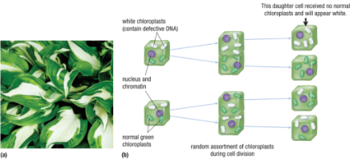

Cytoplasmic Inheritance

Cytoplasm

The Origin of Cytoplasmic DNA
As described in the Diversity of Living Things unit (Unit 1), both mitochondria and chloroplasts originated as prokaryotic organisms. One theory about their origin, now widely accepted in the scientific community, is that over time, each of these organisms was independently taken in by eukaryotic cells and became organelles

|
Mitochondria and chloroplasts originated as independent prokaryotes before becoming organelles within eukaryotic cells.
Like all prokaryotes, predecessors to modern mitochondria and chloroplasts contain their own simple chromosomes—genetic material in the form of one or more circular loops of DNA. This genetic material includes genes necessary for the proper functioning of the organelle. Without this DNA, mitochondria would not be able to carry out cellular respiration. Similarly, chloroplasts would not be able to carry out photosynthesis. Mitochondria and chloroplasts are able to reproduce independently within the cytoplasm, thereby producing copies of their DNA. |
Asexual reproduction and Cytoplasmic Inheritance
When a eukaryotic cell (or individual) is produced by asexual reproduction, each daughter cell inherits any genetic material contained within the organelles of the
parent cell. As the parent cell divides, each daughter cell obtains approximately equal numbers of mitochondria and chloroplasts (if present). These organelles are assorted randomly into the daughter cells.
Sexual reproduction and Cytoplasmic Inheritance
Most male gametes are small and contain very little cytoplasm when compared to the large female egg cell. During fertilization, male gametes do not usually contribute organelles to the new zygote. The zygote inherits cytoplasmic DNA (mitochondria and chloroplasts) from the female gamete a type of inheritance called maternal inheritance.

|
In sexual reproduction, human zygotes receive all of their mitochondria from the egg cell. The sperm contributes only nuclear material. This is an example of maternal inheritance of mitochondrial DNA. |
Cytoplasmic Inheritance and Genetic Variation
Leaves with a variety of colours illustrate how cytoplasmic genetic variation can manifest itself. Some plants contain both normal green chloroplasts and chloroplasts
with a genetic mutation that causes them to be colourless.
During cell division, the random assortment of chloroplasts can produce daughter cells with a mixture of both types of chloroplasts and/or daughter cells with only a single type of chloroplast (green or colourless).

(a) Many varieties of hosta possess variegated leaves composed of patches of cells containing normal green chloroplasts and patches of cells containing mutant colourless chloroplasts. A gene controlling the ability to produce the green pigment is located on the DNA within the chloroplast.
(b) Some plants contain both green and colourless chloroplasts. As the plant grows, it is possible for a
cell to inherit only non-green chloroplasts. If this occurs, the cell will appear white. As this cell continues
to grow and divide, it can give rise to large patches of white cells.
DNA Egg Swapping
If a mother is at risk of passing on mitochondrial disease, the nucleus of her fertilized egg could be removed and transferred to an unfertilized and enucleated egg cell with normal mitochondria from a donor female. The resulting cell would then be transplanted into the mother. The
result would be an embryo with nuclear DNA from both a father and a mother, and normal mitochondria from the donor.
Part Animal, Part Plant!
The green sea slug, Elysia chlorotica, is a very special organism. Shaped and coloured like a leaf, the slug is an animal with the ability to perform photosynthesis. E. chlorotica routinely feeds on algae when it is young. However, instead of consuming and digesting the algae cells entirely, the slugs ingest the algae but keep the chloroplasts intact.

|
The green sea slug, Elysia chlorotica, feeds on algae cells when it is young and keeps the chloroplasts intact and within its body cells. For the remainder of its life, the slug relies on the products of photosynthesis. The chloroplasts are taken in by cells lining the highly branched digestive system of the slug, where they become resident within the cytoplasm. The intact chloroplasts continue to perform photosynthesis, thereby providing the cells of the slug with a steady supply of food. Having obtained a good initial supply of chloroplasts, the slugs can live out the rest of their lifetime of about a year, without feeding. They can simply bask in a sunny location—acting more like a leaf than an animal! |
|
This method of obtaining food is not entirely unique among animals. Other animals have “live-in” microbes that perform photosynthesis. In corals, for example, the microbes that perform photosynthesis are completely intact cells. In the case of the sea slug, only the chloroplasts remain.
Chloroplasts do not normally contain all the genetic information they need to function. Some of the genetic information needed to maintain chloroplasts is found in the nucleus of the algae cells. Amazingly, the sea slug has acquired the necessary genetic information from the algae and has incorporated it into its own nuclear DNA. This passing of genetic information from one species to another is called horizontal gene transfer. There is growing evidence that horizontal gene transfer may be more common than was previously thought, and this is attracting scientists to this new area of genetic research. |